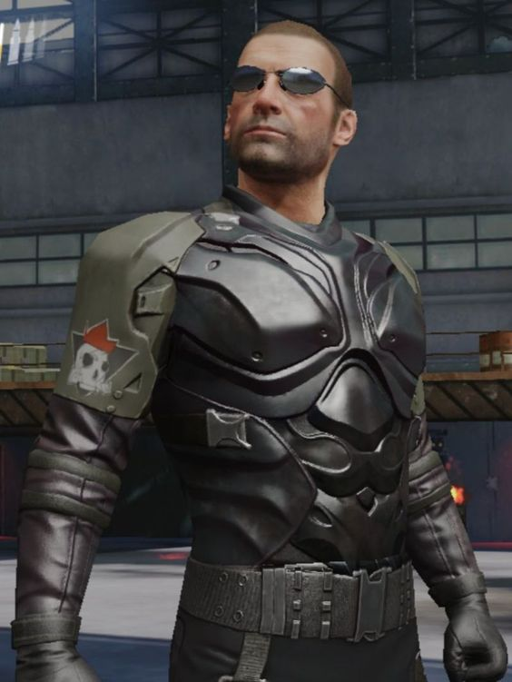
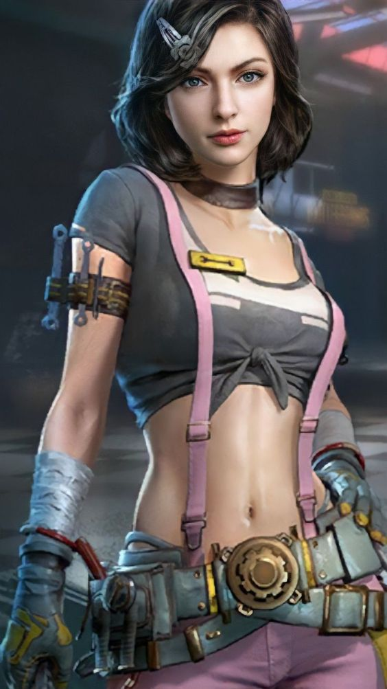
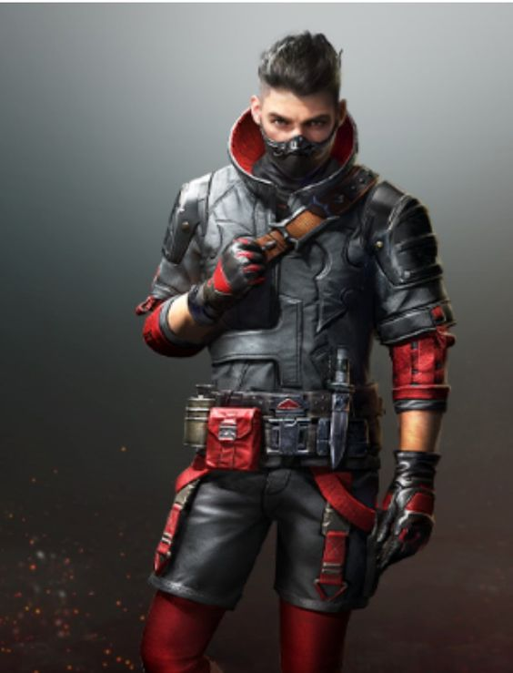
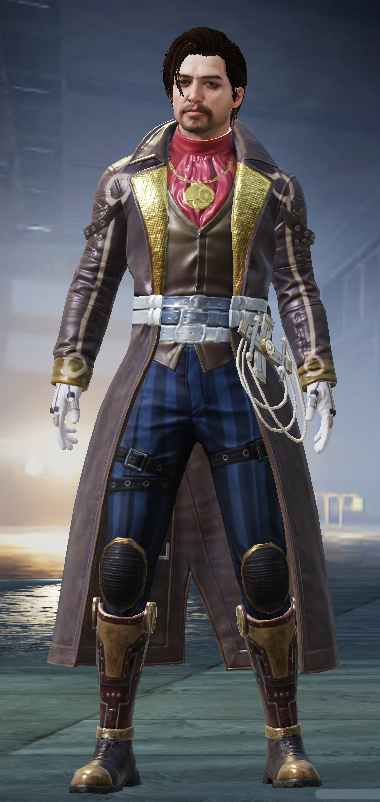
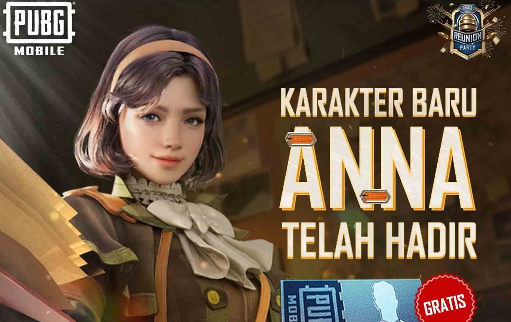

| CHAR | DESCRIPTION |
|  | Victor merupakan seseorang pecinta senjata tipe SMG garis keras. Ia diceritakan seperti tergila-gila dengan senjata SMG hingga melakukan riset penelitian dan mewarnai senjata-senjata SMG yang dimilikinya. Skill yang dimiliki adalah dapat mengurangi waktu ketika mengisi peluru senjata dengan tipse SMG. Namun, skill yang dimiliki hanya bisa digunakan pada mode EvoGround. Meski begitu, skill ini bisa di-upgrade hingga mendapatkan hadiah yang bisa melengkapi karakter Victor dengan mendapatkan hadiah seperti Emoticon, Skin Victor, hingga MVP Showcase dirinya. |
| CHAR | DESCRIPTION |
|  | Sara diceritakan sebagai seorang expert di bidang otomotif, khususnya mobil karena ia sangat menyukai berkendara. Penampakan karakter PUBG wanita ini dilengkapi kunci-kunci untuk reparasi kendaraan dan terlihat seperti montir. Ia memiliki skill ketika sedang berkendara dengan mereduksi tembakan-tembakan dari lawan kepada kendaraan yang dibawanya. Sayang, skill ini hanya bisa digunakan dalam mode EvoGround dan dapat ditingkatkan seperti Victor. Hadiah yang akan diterima pun tidak jauh berbeda. Salah satu hal yang membuat Sara terlihat unik adalah ia sangat mirip dengan Gal Gadot. |
| CHAR | DESCRIPTION |
|  | Carlo merupakan karakter ketiga yang dirilis oleh Tencent sebagai developer game PUBG Mobile. Ia merupakan seorang pembunuh bayaran yang mempelajari senjata yang berbeda-beda untuk mengeluarkan potensi terbaik senjata. Skill spesial yang dimiliki terletak pada kuda-kuda kakinya, yang ketika terjatuh dari ketinggian hanya mengurangi sedikit HP. Pada mode EvoGround, skill ini sangat berguna mengingat di dalam mode Domination dan Assault yang membutuhkan gudang atau gedung-gedung tinggi untuk berperang. |
| CHAR | DESCRIPTION |
|  | Andy memiliki latar belakang sebagai seorang pesulap atau dalang yang hancur akibat kecelakaan. Ia memiliki dendam yang harus dibalas dengan menjadi seorang ahli penembak dalam waktu dekat dan merasakan hal tersebut dalam sebuah pertempuran. Tangannya yang sudah terlatih saat menjadi dalang, membuat kemampuan spesialnya ada pada penggunaan senjatanya. Selain itu, skill ini berguna ketika sedang melakukan looting senjata dalam mode EvoGround. |
| CHAR | DESCRIPTION |
|  | Ia adalah wanita yang lahir dan tumbuh besar di Austria. Memiliki latar belakang seorang anak dari reporter investigasi yang terkenal dan menghilang setelah menyelidiki dan membongkar korban karyawan perusahaan besar. Dari tampilan yang ia kenakan hampir seperti Sherlock Holmes, dengan pakaian khas detektif yang sudah kawakan zaman dahulu. |